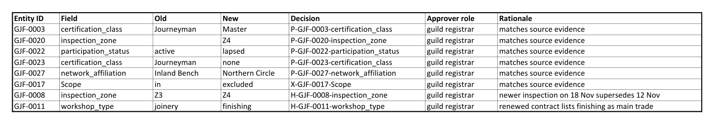

MasterRecord Steward
Master records from three disagreeing sources - justified changes approved, the rest held for a person, nothing else touched.
16 automated tests. Video replayed from a real run (1.0 s).
Three offices each keep a list of the same workshops, and they do not agree: the registry says a workshop is 'Master' level, the contracts office still says 'Journeyman', and two inspectors wrote down different zones. There is one official spreadsheet everyone relies on. MasterRecord decides, field by field, what the evidence actually justifies. When one office is the authority, it wins. When nobody is, and they disagree, it does not guess - it asks a person. Then it changes only the cells that were approved, writes down every change on a new tab, and proves nothing else in the spreadsheet moved.
MasterRecord loads three feeds as field-level assertions and resolves each field with a precedence matrix in YAML: an authority source wins and disagreements are recorded; without an authority any disagreement is held for a person; a missing required value is held as unknown, never treated as ineligible; out-of-scope entities are excluded with a reason; a postcode fallback only fills blanks. Changes and holds go to a review queue. A decisions file with role and rationale is validated; a dry run shows the cells that would change. Apply makes a verified backup, writes only decided cells plus a new dated Changes tab, re-reads the workbook to prove every other cell is unchanged, swaps the file in atomically, and records each decision by hash so applying twice does nothing.
Step by step
feeds/<month>/registry.csv | The guild registry - the authority for certification and participation |
feeds/<month>/contract.csv | The contracts office - network affiliation, its view of certification and type |
feeds/<month>/site.csv | Site inspections - workshop type, zone, postcode |
master/Guild_Workshop_Master.xlsx | The official workbook, with history tabs and reference rows at row 500 |
review/Review_queue_<month>.xlsx | Holds, changes and exclusions with the evidence from each source |
master/Guild_Workshop_Master.xlsx | Updated master with a new 'Changes <date>' tab |
master/backups/ | A verified copy taken before every write |
Predict, then see what the real run did
Every scene of the recorded run. Read what is about to happen, make a prediction, then reveal the actual terminal output. To run it yourself one scene at a time, use the CivicWorks Lab.
Break the data on purpose and watch what happens
Each experiment changed one thing in the real input data and ran the real pipeline beside a normal run. Below are only the lines of output the change made different. In the local Lab the same button runs it live, and you can make your own changes.
The authoritative registry changes a workshop's class
The registry feed says GJF-0001 is now a Master (it was a Fellow).
Two feeds disagree on a field with no single authority
The contract feed says GJF-0001 joined Coastal Ring; the registry still says independent.
Ask the pipeline's database a question
This is the real database a run of this pipeline left behind (steward.sqlite, 96 KB). It opens in your browser - nothing to install, nothing sent anywhere. Each example teaches one SQL idea; edit it or write your own. Changes stay in your browser's copy.
The database, read from its own migrations
Built by applying the project's numbered migration scripts to an empty database. Blue marks a primary key; amber arrows are foreign keys - links the database itself enforces.
workshop_entity
- entity_id text pk
- display_token text
source_assertion
- assertion_id integer pk
- cycle text
- entity_id text → workshop_entity.entity_id
- field_code text
- asserted_value text
- source_code text
- observed_at text
- unique (cycle, entity_id, field_code, asserted_value, source_code, observed_at)
proposal
- proposal_id text pk
- cycle text
- entity_id text → workshop_entity.entity_id
- field_code text
- current_value text
- proposed text
- kind text
- explanation text
- evidence_json text
stewardship_decision
- decision_id integer pk
- proposal_id text → proposal.proposal_id
- resolution text
- value text
- approver_role text
- rationale text
- decided_at text
- decision_hash text
- unique (decision_hash)
history_write
- write_id integer pk
- decision_id integer → stewardship_decision.decision_id
- sheet_name text
- backup_name text
- snapshot_hash text
- written_at text
What it produced in the recorded run


Why it is built this way
Hold when sources disagree and no authority settles it
instead of: Picking the most recent or the most common valueNeither recency nor majority makes a value correct. A person with context decides, and their reason is recorded.
Distinguish 'none' from 'unknown'
instead of: Treating a blank as 'not certified'A blank means nobody told us; 'none' means we know they are not certified. Mixing them would de-list people because of missing paperwork.
Prove every other cell is unchanged
instead of: Trusting the writeRewriting a spreadsheet can silently drop a tab or the reference rows at the bottom. A cell-by-cell comparison catches that before the file is replaced.
Record each decision by its hash
instead of: Re-applying the decisions file each timeRunning apply twice must not double-apply anything.
What goes wrong, and what happens
| situation | result |
|---|---|
| Two inspectors give different zones | Held; the review queue shows both values and their dates. |
| A decision approves a hold, or chooses Z9 | Refused with the reason; nothing is written. |
| The write would disturb another cell | The temporary file is discarded; the master is left as it was. |
Questions it answers
In shortA rulebook saying which source to trust for each field, and what to do when they disagree.
In depthprecedence.yaml: per-field source order, optional authority, required flag, fallback and allowed vocabulary.
In shortIt compares every cell before and after, except the ones it meant to change.
In depthSnapshot of all non-empty cells per sheet before and after; any difference outside the touched cells aborts and discards the temp file.
python start.py # one command: sets everything up and opens the Lab cd masterrecord-steward python -m masterrecord demo --out build/demo # or run just this demo python -m pytest # and its tests